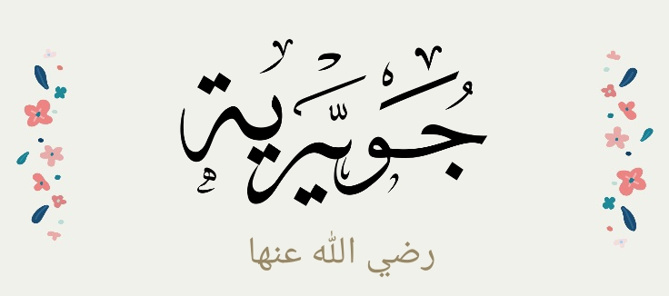
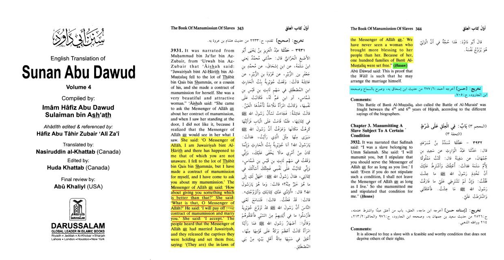
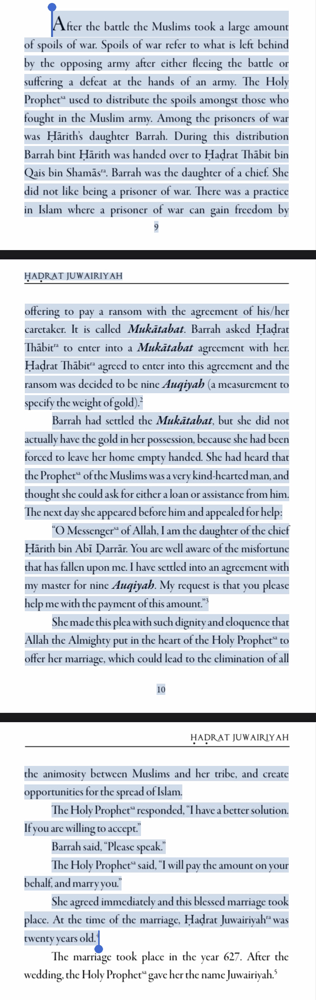

The claim is that the prophet peace and blessings be upon him saw this woman - Juwairiyah - and got lustful over her, and so he wanted to marry her out of lust.
As a prerequisite, let us note that we have already establish that marriage from the start was not to do with love - but rather, it is an institution in which
communities can come together and form bonds and gain strength and tie together families and people.
After the battle took place, Juwairiyah did not want to be a POW so she instead opted to have a ransom paid. There was already animosity between the Muslim army and
her tribe, well of course there was.. they were enemies in war! Nonetheless - this tribe, Bani Mustaliq, would be taken as slaves , but since the prophet married Juwairiyah,
those people would become the prophet’s relatives and thus everyone would let them be free and not be captives

The prophet married her so as to tie bonds between the Muslims and Bani Mustaliq, not out of lust - we can clearly see that due to the shear size of the tribe,
hundreds of families that is, it was less than desirable to hold them - due to them being enemies - as slaves or captives or POW. Thus through this marriage an
institution was formed and so the Muslims welcomed this tribe through this brand new bond, setting free more than one hundred families and ending the conflict /
tension between the Muslim army and this tribe that was originally opposing them.